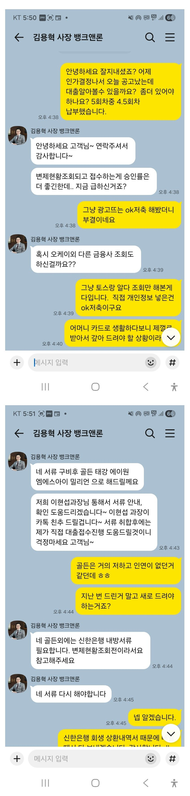
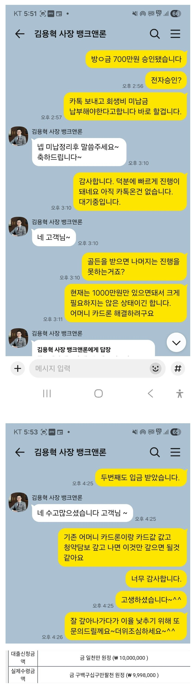

[개인회생자대출] 회생 면책후 1천만 승인. 회생자 대출 김용혁 이사님, 이현섭 과장님 도움 감사합니다.
한번의 회생을 면책받고서 다시 금 5년이 지난 뒤 어려운 사정이 돌아와 다시 회생을 진행하게되었습니다.
부끄럽고 어려움이 매 한순간 떠나질 않아 늘 마음 한켠이 무거웠습니다.
이번 두번째 회생은 1년이 지난 뒤 인가를 받게 되어 피를 말리는 시간이 연속되었습니다.
급여로 생활하다보니 어느순간 가족 카드를 쓰는게 늘게 되었고 카드론에 점점 부담이 늘고 있는 상태였습니다.
다시금 뱅크앤론을 찾게 되었고 인가 된지 2일만에 대출 성공을 하였습니다.
다시한번 김용혁 이사님과 이현섭 과장님 도움주셔서 감사합니다.
앞으로 남은건 빚을 더 늘리지 않고 남은 생활비도 잘 분배 관리해서 안정된 삶을 살아가는게
목표이겠지요 내집 장만이 꿈인데 아직도 그걸 못 이루고 있으니...이번 회생은 기간도 짧은 만큼
끝까지 완주해서 잘 이겨냈으면 좋겠습니다.


다른 분들도 꼭 좋은 결과 있으시길 바랄께요
뱅크앤론 다시한번 감사합니다.
https://cafe.naver.com/cityman88/311025